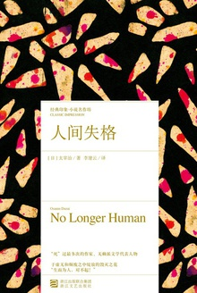
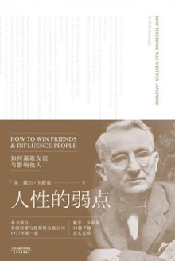
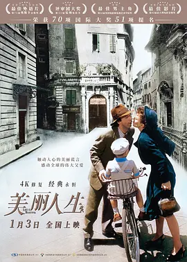

图书推荐
- 1人间失格

简介：川端康成说，死亡是最高的艺术。太宰治虽然只活了三十九岁，但他给日本文学留下的印记却是深刻而震撼的。他的作品中往往充满着深深的罪恶感，正如《人间失格》的主人公所自责的那样，苟活着就是罪恶的种子，而这也是作者本人内心想法的真实写照。为了掐死这颗种子，太宰治做了一次又一次的努力，经过四次失败尝试后，终于在1948年6月的一天和情人顺利自杀。“不要绝望，在此告辞”——时至今日，仍无人能吃透这句遗言的真意，不过对于大多数人而言，姑且看作是一种对生者的鼓励吧。
- 2人性的弱点

简介：《人性的弱点》作为卡耐基最成功的励志经典，荟萃了卡耐基思想理论最精华的部分。该书在1937年首次出版，刚一上市就风靡全球，几十年间被翻译成全世界几乎所有的主要语言，全球总销量已达1.5亿余册，被视为社交心理和沟通技巧的“圣经”。它改变了千千万万人的命运。
- 3月亮与六便士

简介：银行家查尔斯，人到中年，事业有成，为了追求内心隐秘的绘画梦想，突然抛妻别子，弃家出走。他深知：人的每一种身份都是一种自我绑架，唯有失去是通向自由之途。在异国他乡，他贫病交加，对梦想却愈发坚定执着。他说：我必须画画，就像溺水的人必须挣扎。
- 4活着

简介：《活着》讲述了农村人福贵悲惨的人生遭遇。福贵本是个阔少爷，可他嗜赌如命，终于赌光了家业，一贫如洗。他的父亲被他活活气死，母亲则在穷困中患了重病，福贵前去求药，却在途中被国民党抓去当壮丁。经过几番波折回到家里，才知道母亲早已去世，妻子家珍含辛茹苦地养大两个儿女。此后更加悲惨的命运一次又一次降临到福贵身上，他的妻子、儿女和孙子相继死去，最后只剩福贵和一头老牛相依为命，但老人依旧活着，仿佛比往日更加洒脱与坚强。
- 5追风筝的人

简介“许多年过去了，人们说陈年旧事可以被埋葬，然而我终于明白这是错的，因为往事会自行爬上来。回首前尘，我意识到在过去二十六年里，自己始终在窥视着那荒芜的小径。” 12岁的阿富汗富家少爷阿米尔与仆人哈桑情同手足。然而，在一场风筝比赛后，发生了一件悲惨不堪的事，阿米尔为自己的懦弱感到自责和痛苦，逼走了哈桑，不久，自己也跟随父亲逃往美国。
- 6白鹿原

简介：在从清末民初到建国之初的半个世纪里，一阵阵狂风掠过了白鹿原上空，而每一次的变动都震荡着它的内在结构：打乱了再恢复，恢复了再打乱，细腻地反映出白姓和鹿姓两大家族祖孙三代的恩怨纷争。陈忠实先生在这里，人物的命运是纵线，百回千转，社会历史的演进是横面，愈拓愈宽，传统文化的兴衰则是全书的精神主体，以至人、社会历史、文化精神三者之间相互激荡，相互作用，共同推进了作品的时空，在我们眼前铺开了一轴恢宏的、动态的、极富纵深感的关于我们民族灵魂的现实主义的画卷。
- 7边城

简介：《边城》收录了《边城》、《柏子》、《萧萧》、《丈夫》和《三三》等五篇小说。《边城》以二十世纪三十年代川湘交界的边城小镇茶峒为背景，以兼具抒情诗和小品文的优美笔触，描绘了湘西地区特有的风土人情；借船家少女翠翠的爱情悲剧，凸显出人性的善良美好与心灵的澄澈纯净，其独特的艺术魅力，生动的乡土风情吸引了众多海内外的读者。
- 8小王子
简介：遥远星球上的小王子，与美丽而骄傲的玫瑰吵架负气出走，在各星球漫游中，小王子遇到了傲慢的国王，一个任性的酒鬼，一个唯利是图的商人，一个死守教条的地理学家，而后来到地球上，试图找到治 愈 孤独和痛苦的良方。 这时，他遇到一只渴望被驯养的狐狸，于是奇妙而令人惊叹的事情发生了……
- 9无声告白
简介：我们终此一生，就是要摆脱他人的期待，找到真正的自己。 莉迪亚死了，可他们还不知道。 莉迪亚是家中老二，李先生和李太太的掌上明珠，她遗传了母亲的蓝眼睛和父亲的黑头发。父母深信，莉迪亚一定能实现他们无法实现的梦想。莉迪亚的尸体被发现后，她的父亲内疚不已，母亲则一心报复。莉迪亚的哥哥觉得，隔壁的坏小子铁定脱不了关系，只有莉迪亚的妹妹看得一清二楚，而且，她很可能是唯一知道真相的人……
- 10了不起的盖茨比
简介：二十世纪二十年代的美国，一派纸醉金迷之象。大富豪盖茨比的家中，每晚盛宴流觞，醉酒笙歌之中极尽奢靡。一个偶然的机会，小职员尼克闯入了盖茨比隐秘的世界，惊讶地发现，奢华的生活并没有让这个神秘起家的男人舒颜；相反，他深深牵挂着早年因贫寒而分手的女友黛西。盖茨比满心以为，如今的财富可以赢回当年的爱情。然而，他心目中美好的黛西不过是凡尘俗世的拜金女郎。当一切真相大白，残酷现实粉碎了盖茨比的理想，葬送了他的性命。菲茨杰拉德以诗意般的语言谱写了一阕“爵士乐时代”的挽歌，献给了不起的盖茨比，而让人扼腕的是，唯有尼克得以倾听。
电影推荐
- 1肖申克的救赎

简介：20世纪40年代末，小有成就的青年银行家安迪（蒂姆·罗宾斯 Tim Robbins 饰）因涉嫌杀害妻子及她的情人而锒铛入狱。在这座名为肖申克的监狱内，希望似乎虚无缥缈，终身监禁的惩罚无疑注定了安迪接下来灰暗绝望的人生。未过多久，安迪尝试接近囚犯中颇有声望的瑞德（摩根·弗里曼 Morgan Freeman 饰），请求对方帮自己搞来小锤子。以此为契机，二人逐渐熟稔，安迪也仿佛在鱼龙混杂、罪恶横生、黑白混淆的牢狱中找到属于自己的求生之道。他利用自身的专业知识，帮助监狱管理层逃税、洗黑钱，同时凭借与瑞德的交往在犯人中间也渐渐受到礼遇。表面看来，他已如瑞德那样对那堵高墙从憎恨转变为处之泰然，但是对自由的渴望仍促使他朝着心中的希望和目标前进。而关于其罪行的真相，似乎更使这一切朝前推进了一步……
- 2霸王别姬

简介：段小楼（张丰毅）与程蝶衣（张国荣）是一对打小一起长大的师兄弟，两人一个演生，一个饰旦，一向配合天衣无缝，尤其一出《霸王别姬》，更是誉满京城，为此，两人约定合演一辈子《霸王别姬》。但两人对戏剧与人生关系的理解有本质不同，段小楼深知戏非人生，程蝶衣则是人戏不分。
- 3阿甘正传

简介： 阿甘（汤姆·汉克斯 饰）于二战结束后不久出生在美国南方阿拉巴马州一个闭塞的小镇，他先天弱智，智商只有75，然而他的妈妈是一个性格坚强的女性，她常常鼓励阿甘“傻人有傻福”，要他自强不息。
- 4这个杀手不太冷
简介：里昂（让·雷诺饰）是名孤独的职业杀手，受人雇佣。一天，邻居家小姑娘马蒂尔达（纳塔丽·波特曼饰)敲开他的房门，要求在他那里暂避杀身之祸。原来邻居家的主人是警方缉毒组的眼线，只因贪污了一小包毒品而遭恶警（加里·奥德曼饰）杀害全家的惩罚。马蒂尔达得到里昂的留救，幸免于难，并留在里昂那里。里昂教小女孩使枪，她教里昂法文，两人关系日趋亲密，相处融洽。
- 5泰坦尼克号
简介：1912年4月10日，号称 “世界工业史上的奇迹”的豪华客轮泰坦尼克号开始了自己的处女航，从英国的南安普顿出发驶往美国纽约。富家少女罗丝（凯特•温丝莱特）与母亲及未婚夫卡尔坐上了头等舱；另一边，放荡不羁的少年画家杰克（莱昂纳多·迪卡普里奥）也在码头的一场赌博中赢得了下等舱的船票。
- 6美丽人生

简介 犹太青年圭多（罗伯托·贝尼尼）邂逅美丽的女教师多拉（尼可莱塔·布拉斯基），他彬彬有礼的向多拉鞠躬：“早安！公主！”。历经诸多令人啼笑皆非的周折后，天遂人愿，两人幸福美满的生活在一起。
- 7千与千寻
简介：千寻和爸爸妈妈一同驱车前往新家，在郊外的小路上不慎进入了神秘的隧道——他们去到了另外一个诡异世界—一个中世纪的小镇。远处飘来食物的香味，爸爸妈妈大快朵颐，孰料之后变成了猪！这时小镇上渐渐来了许多样子古怪、半透明的人。
- 8辛德勒的名单

简介：1939年，波兰在纳粹德国的统治下，党卫军对犹太人进行了隔离统治。德国商人奥斯卡·辛德勒（连姆·尼森 Liam Neeson 饰）来到德军统治下的克拉科夫，开设了一间搪瓷厂，生产军需用品。凭着出众的社交能力和大量的金钱，辛德勒和德军建立了良好的关系，他的工厂雇用犹太人工作，大发战争财。
- 9盗梦空间
简介：道姆·柯布（莱昂纳多·迪卡普里奥 Leonardo DiCaprio 饰）与同事阿瑟（约瑟夫·戈登-莱维特 Joseph Gordon-Levitt 饰）和纳什（卢卡斯·哈斯 Lukas Haas 饰）在一次针对日本能源大亨齐藤（渡边谦 饰）的盗梦行动中失败，反被齐藤利用。齐藤威逼利诱因遭通缉而流亡海外的柯布帮他拆分他竞争对手的公司，采取极端措施在其唯一继承人罗伯特·费希尔（希里安·墨菲 Cillian Murphy 饰）的深层潜意识中种下放弃家族公司、自立门户的想法。
- 10三傻大闹宝莱坞
简介：本片根据印度畅销书作家奇坦·巴哈特（Chetan Bhagat）的处女作小说《五点人》（Five Point Someone）改编而成。法兰（马德哈万 R Madhavan 饰）、拉杜（沙曼·乔希 Sharman Joshi 饰）与兰乔（阿米尔·汗 Aamir Khan 饰）是皇家工程学院的学生，三人共居一室，结为好友。在以严格著称的学院里，兰乔是个非常与众不同的学生，他不死记硬背，甚至还公然顶撞校长“病毒”（波曼·伊拉尼 Boman Irani 饰），质疑他的教学方法。他不仅鼓动法兰与拉杜去勇敢追寻理想，还劝说校长的二女儿碧雅（卡琳娜·卡普 Kareena Kapoor 饰）离开满眼铜臭的未婚夫。兰乔的特立独行引起了模范学生“消音器”（奥米·维嘉 Omi Vaidya 饰）的不满，他约定十年后再与兰乔一决高下，看哪种生活方式更能取得成功。